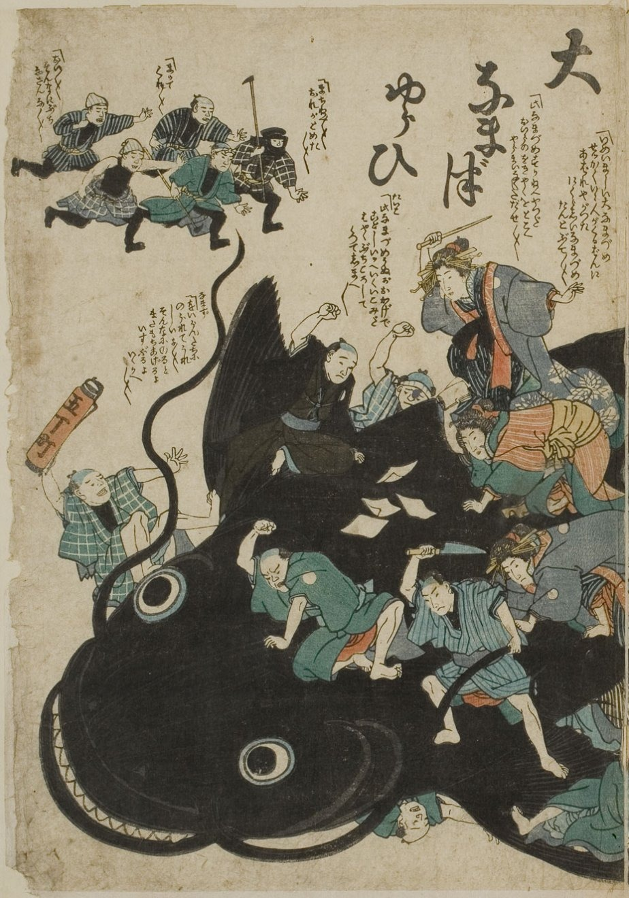

Every disaster leaves behind more than damage. It leaves songs, warning stones, folk tales, throwaway jokes, and arguments about whose fault it was. This tool puts those responses in conversation with each other, place by place, to understand how different communities actually cope, and to take seriously the idea that culture itself works like infrastructure: something that can be built up, relied on, and just as easily left to fall apart.
It is built around one idea in particular: the music, literature, and art that comes out of a disaster is not just aftermath. It is data about what a place has decided the hazard means, whether it is named and understood or something people would rather not talk about. Listening to that, and actually valuing it, is where designing programs with a community instead of for it should start.

Disaster comes from the Latin dis- (apart, away) and astro (star). To be dis-astered is to be un-starred, to have lost the protective star that was supposed to watch over your passage through life.
For most of human history, that was the whole explanation. A flood, a famine, a plague. None of it was yours to prevent, because none of it was ever yours to control. Your lucky stars had simply stopped looking out for you, and whatever came next was cosmic bad luck, not a failure of planning, memory, or preparation.
Or even worse, you'd done something to deserve it! Disasters only happen to the wicked, after all.
This tool exists because that stopped being good enough a long time ago. The stories collected here are, in a way, the record of people arguing back. Refusing to leave disaster to the stars, and building something, a song, a stone, a habit, a name, that might catch them next time instead.
Tsunami is a Japanese word, born out of the country's long history with them. In direct translation it means nothing more than harbor wave, a plain, almost bureaucratic description that only picked up its dread over time.
Hawaiian doesn't compress a tsunami into one word. The language carries dozens of words for the sea in its every mood, and the tsunami sequence draws straight from that same vocabulary: kai a Pele, the sea of Pele, names the condition itself after the goddess of volcanoes and fire, before kai ho'e'e, the rising sea, kai mimiki, the receding sea, and kai e'e, the climbing sea, what English flattens into "tidal wave," track it stage by stage. Only a culture of navigators who already read the ocean's every crease under sun and stars would need words precise enough to name each of those stages on its own.
Hurricane tells the opposite story. It comes from Huricán, a word from the Taino peoples of the Caribbean, meaning god of the storm, or god of the evil wind. Tsunami and the Hawaiian sea-words come from a normalized relationship with the destructive power of nature, the vocabulary of people who had lived alongside a hazard long enough to develop real wisdom about it. Hurricane comes from someplace else: not a known force to be studied and lived with, but an active, malevolent will, something still feared rather than understood.
Long before disaster meant losing your star, plenty of cultures just called it a monster outright. Earthquakes turn up in old writing as roaring dragons. Tornadoes get cast as devils, floods as ghouls. English still carries the same instinct in one everyday phrase: freak of nature.
Western tradition leaned hard into the freak half of that phrase. Biblical theology tended to treat disaster as a singular, one-off event, in part because the Middle East's flood-prone history wasn't the West's own lived experience. Southeast Asian cosmologies took the opposite path. Japan and Indonesia developed alongside a constant, unbroken relationship with typhoons and tsunamis. As one scholar put it, Shinto might be the perfect religion for natural disaster: not an exception to normal life, just a known and permanent part of it.
Calling something an amorphous monster, unknowable and otherworldly, is a tidy way to avoid doing anything about it. It's the same trap as being un-starred. If disaster is a force from outside the world entirely, nobody has to ask what could have been done differently.
Every generation a place goes without living through its worst hazard again, the memory of it loses a little vividness, and gets a little easier to set aside or disregard entirely. Research on flood-prone communities puts a rough number on that fade: memory tends to hold for about two to three generations, somewhere in the range of fifty to seventy-five years, before a community starts drifting back toward the same ground it once learned to avoid (Fanta et al., 2019; Schwartz, 2015). Laid out on paper, hazard by hazard, the distance between when somewhere first names a risk and when it finally lets the story go stops being an abstraction. This is adapted from a chart in the original thesis, organized by hazard rather than by place.
The map tells a tight, curated story built around four stages. This is the looser space behind it: every deity, monument, festival, song, and open research thread that didn't need to connect to anything else to earn its place here. Search it, or filter by format, hazard, region, era, or theme, to browse it the way it was actually researched, thematically, not narratively.